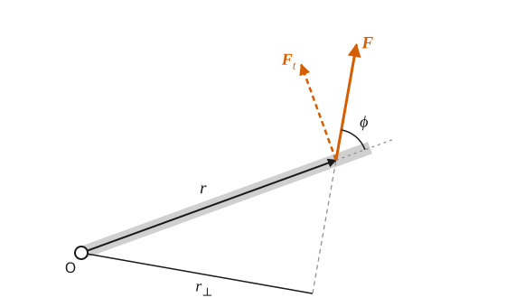

← 목차
돌림힘 (torque)
회전축에서
만큼 떨어진 곳에 힘
가 각
로 작용하면 물체를 돌리려는 작용인
돌림힘 (torque)
이 생긴다.
(10.6.1)
같은 값을
(10.6.2, 10.6.3)로도 쓴다.
는 회전축에서 힘의 작용선까지 거리 (moment arm)다.
정지한 물체를 반시계 방향으로 돌리려 하면 양(+), 시계 방향이면 음(−)이다.
